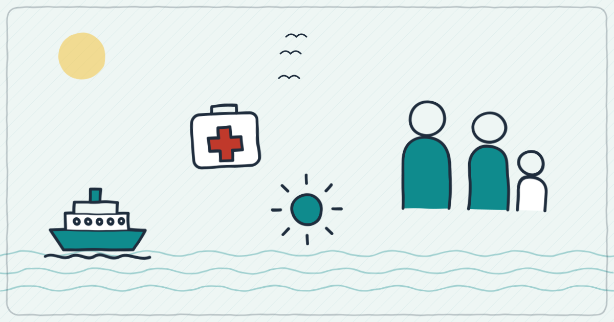

Kids and Seasickness on a Cruise: What Works by Age
Most children never notice a big ship moving, and under-twos almost never do. For a child who gets carsick, book a midship cabin on a low deck, ask a pharmacist about a children's dimenhydrinate product before you leave home, and get them outside looking at the horizon the moment they go quiet.

Most kids feel nothing on a modern cruise ship, and babies and toddlers almost never do. The child to plan for is the one aged roughly five to twelve who already gets carsick, because that is where motion sickness peaks. For that child the plan is simple: a midship cabin on a low deck, a children's remedy chosen with a pharmacist before you leave, and fresh air plus a view of the horizon the moment they go quiet at dinner.
Do kids get seasick more than adults?
Not across the board, but at certain ages, yes. Motion sickness is uncommon in children under two, becomes common between about six and twelve, and often fades through the teenage years. Parents are regularly surprised that the eight-year-old is green while the toddler is fine.
The clues are on land. A child who feels ill reading in the car, who hates the back seat on winding roads, or who gets migraines is more likely to notice a ship. Three things make any child worse at sea: being tired, being hungry, and staring at a screen below deck while the ship moves. The first evening, when everyone is overexcited and dinner is late, is when it usually shows up.
Which cabin is best for a child who gets carsick?
Low and in the middle. A ship pivots around a point near its centre, so a cabin on a lower deck halfway along the hull moves least. The higher and further forward you go, the more you feel, so skip the cabins under the bridge and the far aft.
An oceanview or balcony beats an inside for a child who needs the horizon. Our guide to the best cabin position and side for Alaska covers how to read a deck plan. Check what is above and below too: a cabin under the pool deck or over a nightclub trades motion for noise, and a child kept awake is more likely to be sick. The noisy cabin guide lists the spots to avoid.
What can you give a child for seasickness?
Ask a pharmacist at home, with your child's age and weight in hand, and buy before you travel. Ships stock adult products, including the free tablets at guest services.
| Remedy | Labelled age | Notes for parents |
|---|---|---|
| Children's dimenhydrinate (Gravol Kids in Canada, Dramamine for Kids in the US) | 2 to 12 | Chewable or liquid, dose set by age band on the pack. Causes drowsiness in most children and, in a few, the opposite. Not for under-twos. |
| Adult dimenhydrinate 50 mg tablets | 12 and over | The ordinary Gravol or Dramamine tablet. Do not halve it for a younger child unless a doctor has told you to. |
| Meclizine (Bonine, Dramamine Less Drowsy, the usual guest services handout) | 12 and over | Longer acting and less sedating, but not labelled for younger children without a doctor's say-so. |
| Scopolamine patch (Transderm) | Adults | Not labelled for children. Younger children are at higher risk of confusion and hallucinations, so doctors reserve it for teens in hard cases, if at all. |
| Acupressure wristbands | Any age they will tolerate | Child sizes exist. No side effects, so worth a try even if the evidence is mixed. |
| Ginger chews, ginger ale, crackers | Any age | Helps settle a stomach that is already uneasy. Not a preventive on its own. |
Gravol or Dramamine: same drug, different box
The children's versions sold in Canada and the US are the same active ingredient at the same children's strengths. Canadians sailing from Florida can buy Dramamine for Kids near the port; Americans boarding in Vancouver will find Gravol Kids at any pharmacy. Read the age band on the box, because adult and children's packs sit side by side.
When should you give a child the seasickness tablet?
Before the motion, not after. Every oral remedy works far better taken 30 to 60 minutes ahead than once a child is already sick. For most itineraries that means one dose before the ship leaves the harbour on the first evening, then only on days when the captain's noon announcement warns of swell. Try a dose at home first, so you learn whether your child sleeps for four hours or bounces off the walls before the cruise rather than during it.
What to do in the first ten minutes
- Stop what they are doing. Phones, tablets and books away.
- Walk them outside, or to a big window on a low deck near the middle of the ship. The promenade deck is ideal.
- Point them at the horizon and talk about anything else. Looking at a fixed far point lets the eyes and inner ear agree again.
- Offer small sips of cold water and something plain: crackers, a bread roll, a green apple, a ginger chew.
- If they want to lie down, let them, flat on their back with eyes closed. Many children sleep it off in half an hour.
- Give the children's remedy only if you know the dose and it is the right product for their age.
Most children recover within a day as the brain learns the motion. If it comes back on every sea day, have a word with the ship's medical centre rather than guessing with the medicine bag.
Which cruises are gentle and which are not?
Where you sail matters more than any tablet. Sheltered water with land on both sides barely moves a big ship; open ocean does.
| Usually gentle | Sometimes lively | Open ocean |
|---|---|---|
| Alaska's Inside Passage from Vancouver | The Gulf of Alaska leg on one-way Alaska cruises | The five sea days on a Vancouver to Hawaii crossing |
| Bahamas and Eastern Caribbean from Florida in winter | Western Caribbean when a front comes through | Transatlantic repositioning cruises |
| Mediterranean weeks in summer, river cruises anywhere | The Bay of Biscay, Cape Hatteras | Caribbean in the back half of hurricane season |
Will the kids club take a seasick child?
A mildly queasy child is often better off in the club than moping in the cabin, because distraction works. A child who is vomiting is a different matter. Youth staff cannot tell seasickness from a stomach bug, and a stomach bug on a ship is treated seriously, so expect a call on the cabin phone or the ship's app asking you to collect them, and a request that they stay away until they have been symptom-free for a set number of hours. If the medical centre records it as gastro rather than motion sickness, the whole cabin may be asked to stay in for a period.
When to see the ship's doctor, and what it costs
Go if your child cannot keep fluids down for more than a few hours, is unusually floppy or hard to wake, has not passed urine in a long while, has a fever or stomach pain, or was sick before the ship started moving. Those point to something other than motion.
The medical centre is a private clinic. A consultation is billed to your onboard account, commonly well over US$100 at recent prices before any medication is added, and provincial plans in Canada pay next to nothing at sea. Make sure every child is named on a travel medical policy. Our note on cruise travel insurance for Canadians explains what to look for.
Want this checked for your own sailing? A licensed cruise consultant can price it up and answer questions for free, with no obligation.
Ask a cruise expert →The small kit that fits in a day bag
Children's remedy with the dose written on a sticky note, child-size wristbands, ginger chews, crackers, two sick bags, wipes, a spare T-shirt and a water bottle. Keep it in your hand luggage on embarkation day, because checked bags can reach the cabin hours after the ship has started to move.
Questions people also ask
At what age do kids get seasick?
Motion sickness is rare before about age two, is most common through the primary school years, and often eases in the teens. A child who feels ill in the back seat of a car or on a swing is the one most likely to feel a ship.
Can a 4-year-old take Gravol on a cruise?
Children's dimenhydrinate products such as Gravol Kids in Canada and Dramamine for Kids in the US are labelled for ages 2 to 12, with the dose set by age on the pack. Check the dose with a pharmacist before the trip and never use an adult tablet, a half adult tablet or a patch on a young child.
Is the free seasickness medicine at guest services safe for children?
Usually not for young ones. The tablets handed out at the desk are typically meclizine, which is labelled for ages 12 and over. Bring your own children's remedy from home.